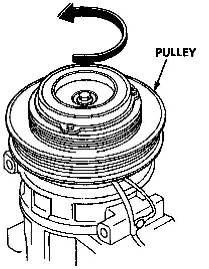
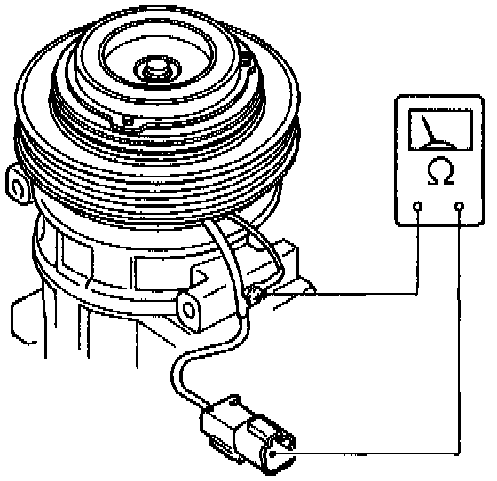
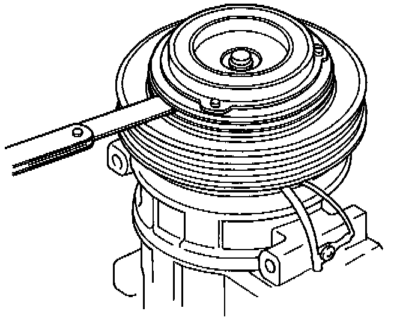

Component Test - Manual Heating and Air Conditioning

1. Check pulley bearing play and drag by rotating the pulley by hand. Replace the pulley with a new one if it is noisy or has excessive play/drag.

2. Check resistance of the field coil:
Field Coil Resistance: 3.6 ± 0.2 ohm at 20°C (68°F)
If resistance is not within specifications replace the coil.

3. Measure the clearance between the pulley and pressure plate all the way around. If the clearance is not within specified limits, the pressure plate must be removed and shims added or removed as required, following the procedure on the next page.
Clearance: O.5 ± 0.15 (0.020 ± 0.006 in)
NOTE:
The shims are available in three sizes: 0.1 mm, 0.2 mm and 0.5 mm thick.